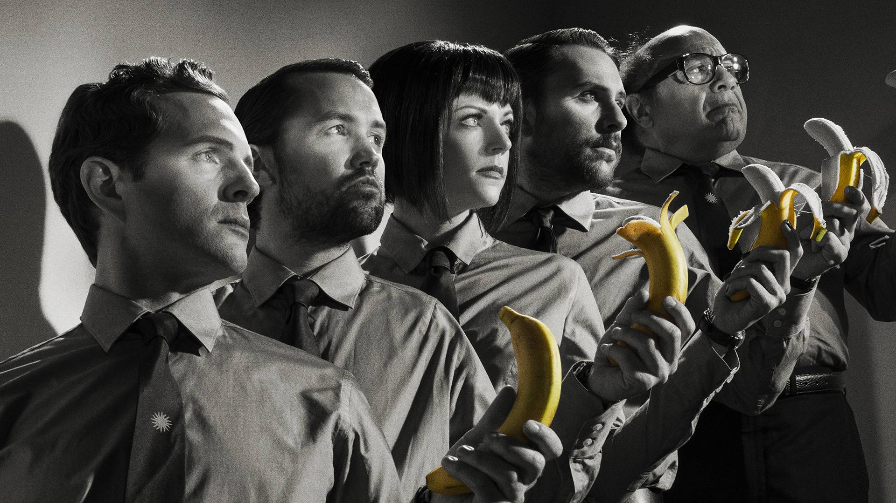
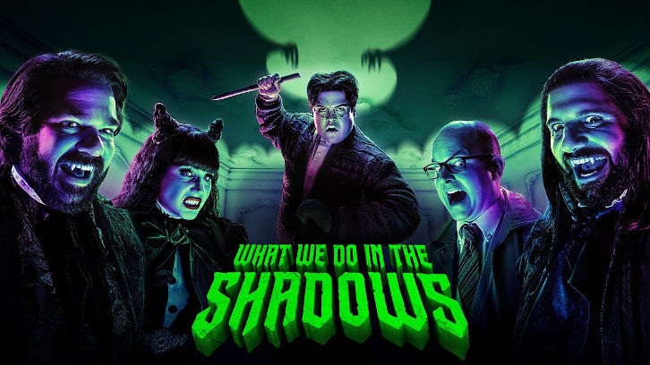
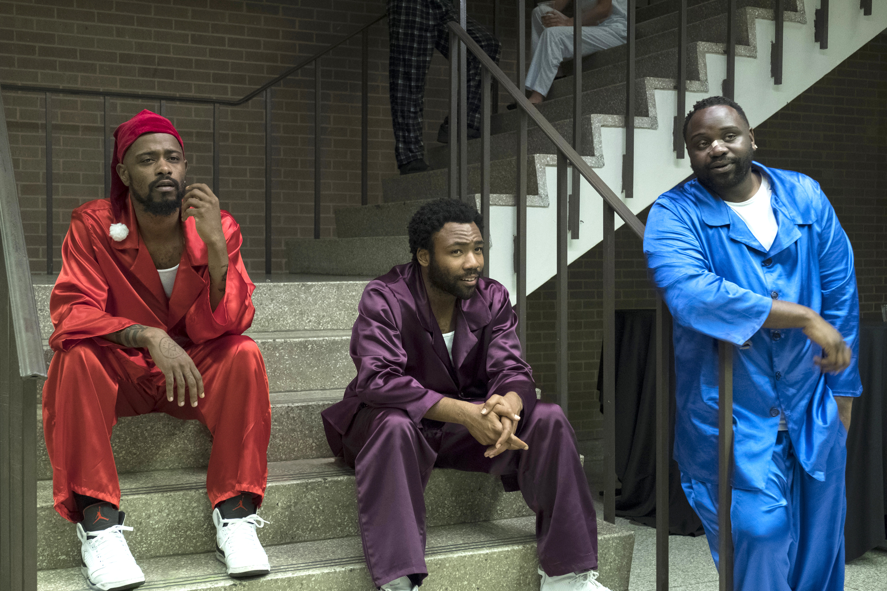
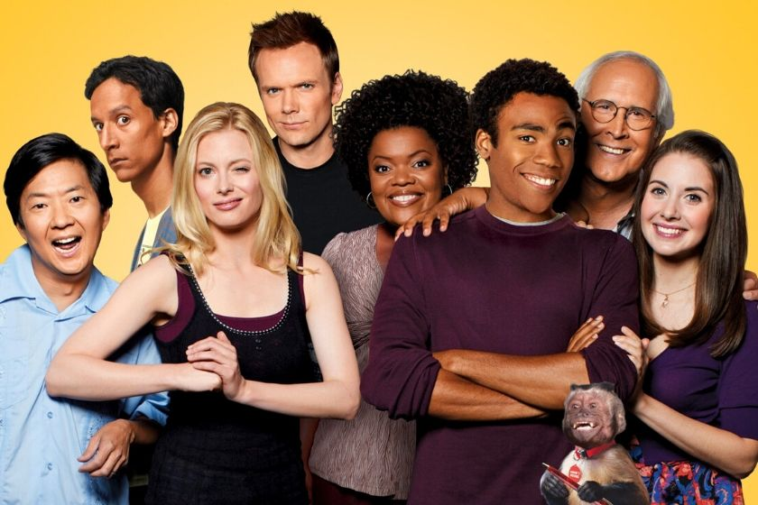
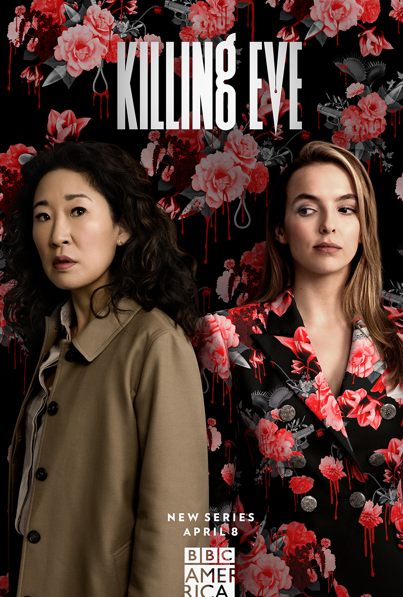

Son yılların en ilginç dizilerinden olan, etik ve genel ahlak konularında alabildiğine “politik yanlış” cevaplar veren ve herkesi eşit derecede kızdıran: It’s Always Sunny in Philadelphia. 12. sezonu biten ve merakla yeni sezonunu beklediğimiz It’s Always Sunny in Philadelphia oldukça sıra dışı bir dizi. “Üç erkek ve bir kadın arkadaş Philadelphia’da bar işletmektedir.It’s Always Sunny in Philadelphia son yılların en ilginç komedi dizisi. Irkçılık, eşcinsellik, gençlere içki satışı, kürtaj, hastalıklı insanlara davranış gibi konulara tamamıyla “politik yanlış” cevaplar vererek, 30 yaş civarı orta yaş takıntılarını da konu alıyor. Aynı zamanda oyuncuları olan Rob McElhenney, Glenn Howerton ve Charlie Day tarafından yaratılıp geliştirilen It’s Always Sunny in Philadelphia; kişisel çıkarlarından başka hiçbir şey düşünmeyen ve Güney Philadelphia’da başarısız bir İrlanda barı işleten bir arkadaş grubunun başından geçen maceraları anlatıyor. Dennis ve Deandra Reynolds, onların üvey babaları Frank Reynolds, arkadaşları Charlie ve Mac.Bu gruba dahil olan herkes kişisel çıkarların peşinden koşan; her biri oldukça sahtekar, açgözlü, bencil, sadakatsiz, tembel, düzenbaz, iki yüzlü, kibirlidir ve her zaman tartışabilecek bir konu bulabilmektedir. Dizinin neredeyse her bölümü kendilerince kusursuz olarak yaptıkları tasarıların peşinden koşarak, kişisel çıkarları için birbirlerine ya da başkalarına komplolar kurarak ya da sadece eğlenmek için birbirlerinin rezil oluşunu seyrederek geçmektedir.
Aynı adlı komedi filminden uyarlanan What We Do in the Shadows bir grup vampirin gündelik hayatını takip ediyor. Thor: Ragnarok’un yönetmeni Taiki Waititi ile Yeni Zelandalı aktör ve senarist Jemaine Clement’in yönettiği Aylak Vampirler, 2014 yılında vizyona girmiş; eleştirmenlerden geçer not almıştı. Dizi uyarlaması, filmdekilerden farklı bir grup karakterin hikayesini işleyecek. Hikaye bu kez New York’ta geçecek ve yüzyıllardır insanlarla birlikte yaşayan vampirler Guillermo ve Nandor’ın maceralarını ekrana taşıyacak.
Amerikan yapımı komedi dizisi Atlanta, dizinin yaratıcısı Donald Glover dizinin başrol oyuncularından birisi olarak kamera karşısına geçiyor. Atlanta’da iki kuzenin çıktıkları macerada hiphop müzikteki başarıları anlatılacak. Bu zorlu yolda takıldıkları, iki basamak birden atladıkları ve yaşamlarını etkileyen birçok ayrıntıyı görme imkânı yakalayacağız.
Greendale Community College’da okuyan bir grup uyumsuz insanı anlatan, zekice hazırlanmış bir komedi. The Soup’dan tanıdığımız Joel McHale, grubun lideri Jeff Winger rolünde, okul derecesi iptal edilen geveze bir avukat olarak karşımıza çıkıyor. Winger’ın sınıf arkadaşları yardımıyla oluşturduğu çalışma grubunda gençler, ödevlerden çok başka konularla ilgileniyorlar. Karakterlerimizin Greendale Community College'daki 2. senelerinde de birbirinden komik olayların ardı arkası kesilmiyor.
İngiliz yazar Luke Jennings'in "Villanelle" romanlarından uyarlanan "Killing Eve" psikopat bir katil ve onu avlamakla suçlanan bir kadın etrafında dönen dramatik bir gerilim dizisidir. Kurnaz ve hazır cevap bir kadın olan Eve (Sandra Oh) hayatından bıkmış, güvenlik servisi operatörü olarak maaşlı bir işte çalışıyor. Ancak bu masabaşı iş, onun casus olma fantezilerini tatmin etmeye yetmez. Villanelle (Jodie Comer) ise işini zevkle yapan, zarif ve yetenekli bir katildir. Aynı derecede birbirlerine takıntılı olan bu iki kurnaz kadın, destansı bir kedi fare oyununun içine düşerler.
